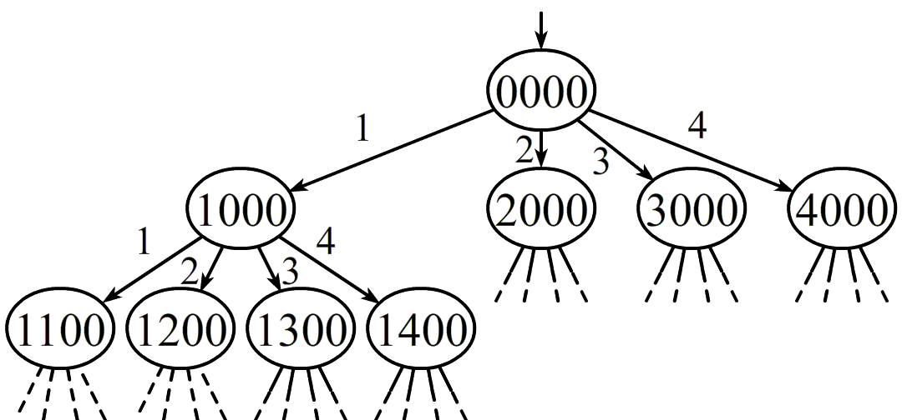
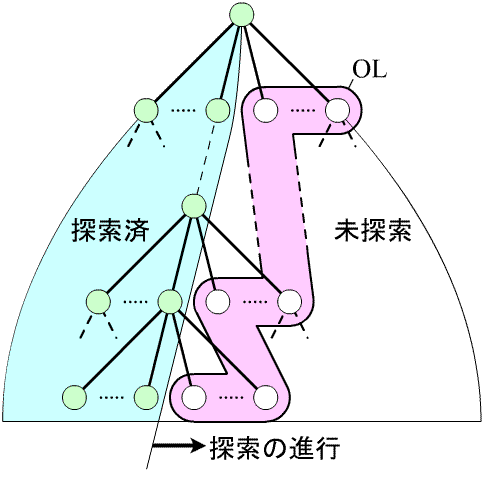
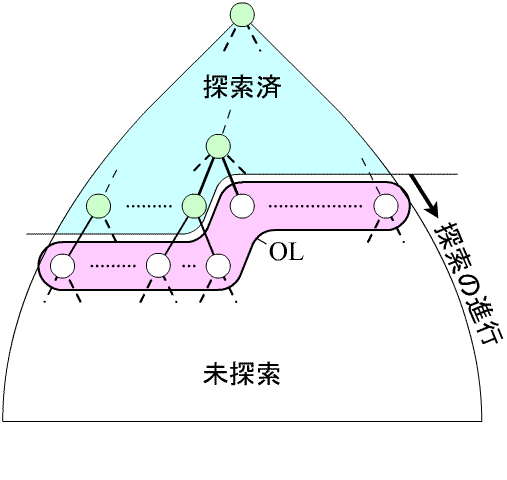
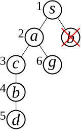
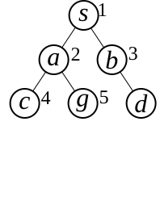

（参考資料「木・グラフの探索」も参照してください）
〔8パズル〕（pp.19-20）
（cf. p.20, ffig.2.1～2.3）
〔4クイーン問題〕
※ 右の例は条件を満たしていない． （右の2つが斜め45度の関係）
P=⟨V,Op,δ,s,Γ⟩P=\langle V, Op, δ, s, Γ\rangleP=⟨V,Op,δ,s,Γ⟩
V:状態‾の集合Op:オペレータ‾（操作）の集合δ:状態遷移‾関数（δ:V×Op→V∪{⊥};後述）s:初期状態‾（s∈V）Γ:目標状態‾集合（Γ⊂V）\begin{array}{lll} V &:&\textcolor{forestgreen}{\underline{状態}}の集合 \\ Op&:&\textcolor{forestgreen}{\underline{オペレータ}}（操作）の集合 \\ δ &:&\textcolor{forestgreen}{\underline{状態遷移}}関数（δ:V×Op → V∪\{⊥\}; 後述） \\ s &:&\textcolor{forestgreen}{\underline{初期状態}}（s∈V） \\ Γ &:&\textcolor{forestgreen}{\underline{目標状態}}\bold{\color{firebrick}集合}（Γ⊂V） \end{array} VOpδsΓ:::::状態の集合オペレータ（操作）の集合状態遷移関数（δ:V×Op→V∪{⊥};後述）初期状態（s∈V）目標状態集合（Γ⊂V）
δ(v,p)δ(v, p)δ(v,p)：状態 vvv にオペレータ ppp を適用した遷移先の状態 δ(v,p)={v′（遷移先が v′）⊥（遷移先がない=遷移できない）\quad δ(v, p) = \left\{\begin{array}{ll} v'&（遷移先が\ v'）\\ ⊥&（遷移先がない = 遷移できない） \end{array}\right.δ(v,p)={v′⊥（遷移先が v′）（遷移先がない=遷移できない）
δ(v,p)≠⊥δ(v,p) ≠ ⊥δ(v,p)=⊥のとき, 「状態 vvv はオペレータ ppp の適用条件を満たす」 という．
＝ 状態空間 P=⟨V,Op,δ,s,Γ⟩P=\langle V, Op, δ, s, Γ\rangleP=⟨V,Op,δ,s,Γ⟩ のグラフによる表現
{V={s,a,b,g}δ:(右の表)Op={x,y}Γ={g}\left\{\begin{array}{rcl} V &=&\{s,a,b,g\}\\ δ &:&(右の表)\\ Op&=&\{x,y\}\\ Γ &=&\{g\}\\ \end{array}\right. ⎩⎨⎧VδOpΓ=:=={s,a,b,g}(右の表){x,y}{g}
状態集合V:面の配置の集合状態集合 V : 面の配置の集合状態集合V:面の配置の集合 （p.20, ffig.2.1～2.3 のようなものの集まり）
オペレータ集合 Op={U,D,L,R}Op = \{ U, D, L, R \}Op={U,D,L,R} UUU: 空白マスの上からピースをその空白マスに動かす DDD: 空白マスの下からピースをその空白マスに動かす LLL: 空白マスの左からピースをその空白マスに動かす RRR: 空白マスの右からピースをその空白マスに動かす
4×4のマス目の横の並びを「行」，縦の並びを「列」とする
どの列も，クイーン（以下Q）は高々1個しか置かないとする →→→ 各列におけるQの位置（行の番号）を左の列から順に \quad 並べたもので状態を表す（Qがない場合は 000 とする） V={n1n2n3n4 ∣ 各 ni は 0～4 のいずれか}V = \{ n_1n_2n_3n_4\ |\ 各\,n_i\,は\,\sf{0～4}\,のいずれか\}V={n1n2n3n4 ∣ 各niは0～4のいずれか}

状態遷移図のようなノード（〇〇〇）とリンク（→→→）で構成される構造は，有向グラフと呼ばれる．
有向グラフのうち，起点のノードから枝分かれするばかりで，合流したり戻ったりしないものは， 木（または木構造）と呼ばれる．
前出の〔4クイーン問題〕の状態遷移図は木
〔8パズル〕の状態遷移図（fig.2.5）は一見木のように見えるが， すべてのリンクは逆方向にもリンクがあり， 枝分かれをずっと下にたどっていくと，初期状態に戻ったりもするので木ではない．
問題の解が先のスライドのどちらのタイプであったとしても ……
（以下，参考資料「木・グラフの探索」も参照すること）
（cf. 参考資料「木・グラフの探索」）
（各ノードの左の数字が縦型探索の探索順， 右の数字が横型探索の探索順）
〔参考資料 「木構造の縦型探索例（animation）」 「木構造の横型探索例（animation）」〕


※ テキスト p.26 の手順は，厳密には縦型探索ではない．
探索順序を探索木（次項で解説）で表す． （左：縦型探索，右：横型探索）


〔参考資料：「有向グラフの縦型探索例（animation）」 「有向グラフの横型探索例（animation）」〕
一般に縦型探索は
横型探索は
という特徴がある．
また，いずれの場合も，探索をどこで打ち切るかによって，複数の方法がある
即決探索： 目標状態が見つかったところで打ち切る探索 ・ 目標状態が一つ見つかればよい場合は，これで十分
徹底探索： 最後まで (OL が空になるまで) 続ける探索 ・ 目標状態をすべて見つけたい場合 ・ 最も良い目標状態 (最適解) を見つけたい場合
（参考資料「木・グラフの探索」も手許に準備しておいてください）
「4クイーン問題の状態表現の例」も参照
，末端のノードは*葉*
状態空間を迷路に例えると分かりやすい？
アニメーション教材を使用